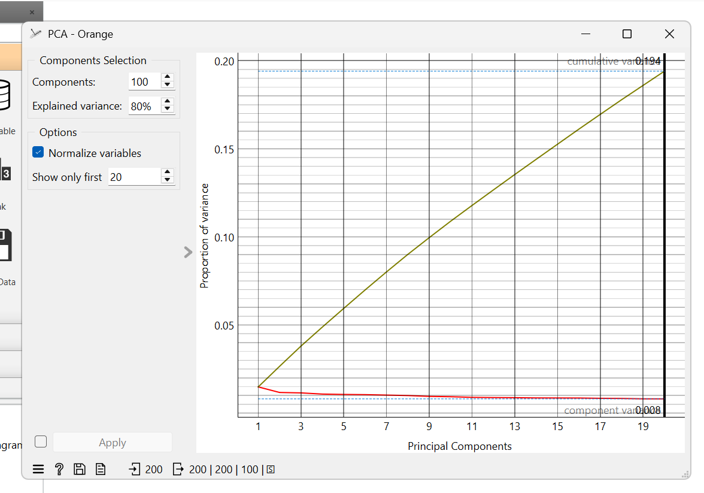

Modelling Klasifikasi Berita dengan Orange Data Mining¶
Tahap ini melakukan pemodelan klasifikasi teks berita ke dalam dua kategori — Sport dan Finance — menggunakan aplikasi Orange Data Mining. Data masukannya berasal dari hasil preprocessing pada tugas sebelumnya:
tfidf.csv— matriks TF-IDF berukuran 200 dokumen × 7.063 kata.pca.csv— data yang sudah direduksi menjadi 169 komponen utama (output PCA pada preprocessing).
Eksperimen dibagi menjadi dua alur pemodelan: Alur 1 menguji data TF-IDF yang direduksi langsung di Orange dengan widget PCA, sedangkan Alur 2 memakai data hasil reduksi PCA yang sudah disiapkan sebelumnya sehingga langsung menuju model tanpa widget perantara.
Alur 1: Reduksi PCA di Orange¶
Alur pertama menyusun alur kanvas dari tfidf.csv, mereduksi dimensinya dengan PCA, kemudian menguji dua model klasifikasi. Tampilan kanvasnya sebagai berikut:
Gambar 1. Kanvas alur pemodelan 1 (TF-IDF → PCA → Naive Bayes & kNN).
Langkah pembuatan node:
- CSV File Import — mengimpor file
tfidf.csvberisi 200 baris dokumen dan 7.063 kolom fitur kata. Baris pertama berisi nama kolom sehingga otomatis dikenali sebagai header. - Select Columns — mengatur peran tiap kolom: seluruh kolom kata masuk ke Features, kolom
labelditetapkan sebagai Target (kelas Sport / Finance), dan kolomiddiletakkan di Metas sebagai pelengkap. - PCA — mereduksi ruang vektor ribuan dimensi menjadi komponen utama yang jauh lebih ringkas.
- Naive Bayes & kNN — kedua model menerima saluran Data langsung dari node PCA.
- Test and Score — menerima saluran Learner dari kedua model serta saluran Data dari PCA, lalu mengevaluasi performanya.
Pengaturan Select Columns¶
Widget Select Columns dipakai untuk memisahkan peran kolom sebelum diproses oleh PCA dan model:
Gambar 2. Pengaturan kolom target pada widget Select Columns.
- Target — kolom
labelsebagai kelas yang diprediksi (sport dan finance). - Features — seluruh kolom kata sebagai atribut prediktor.
- Metas — kolom
idsebagai informasi pelengkap yang tidak ikut dalam perhitungan model.
Konfigurasi PCA¶
Pada widget PCA, ambang explained variance diatur agar mayoritas informasi teks tetap terjaga dan opsi normalize variables diaktifkan supaya seluruh fitur distandarisasi skalanya sebelum komponen utama dihitung:
 Gambar 3. Pengaturan parameter PCA (explained variance 80%, normalize variables aktif).
- Explained Variance 80% — mempertahankan sebanyak mungkin variansi kumulatif korpus teks.
- Normalize variables — dicentang agar fitur berskala seragam.
- Karena batas maksimal widget PCA Orange adalah 100 komponen, jumlah komponen terpilih otomatis menjadi 100 (variansi kumulatif sekitar 67,8%) — jauh lebih ringkas dibandingkan 7.063 fitur kata awal.
Hasil Pengujian Alur 1¶
Evaluasi memakai widget Test and Score dengan metode random sampling (repeat train/test = 10, proporsi latih-uji 66:34 secara stratified):
Gambar 4. Hasil Test and Score alur 1 (TF-IDF → PCA 100 komponen).
| Model | AUC | CA (Accuracy) | F1-Score | Precision | Recall | MCC |
|---|---|---|---|---|---|---|
| kNN | 1.000 | 0.995 (99.5%) | 0.995 | 0.995 | 0.995 | 0.990 |
| Naive Bayes | 0.994 | 0.975 (97.5%) | 0.975 | 0.975 | 0.975 | 0.950 |
Analisis:
- kNN mencapai akurasi 99.5% dengan AUC sempurna (1.000) — di ruang proyeksi 100 komponen, dokumen Sport dan Finance sangat mudah dipisahkan oleh tetangga terdekat.
- Naive Bayes menghasilkan akurasi 97.5% dan MCC 0.950, cukup stabil meskipun pendekatan probabilitasnya bekerja pada ruang berdimensi tinggi.
Alur 2: Data Reduksi PCA dari Preprocessing¶
Alur kedua memakai pca.csv, data yang sudah direduksi menjadi 169 komponen utama pada proses preprocessing, sehingga tidak diperlukan widget PCA di dalam kanvas — model langsung menerima data yang sudah ringkas. Tampilan kanvasnya:
Gambar 5. Kanvas alur pemodelan 2 (data reduksi pca.csv → Naive Bayes & kNN).
Langkah pembuatan node:
- CSV File Import — mengimpor
pca.csv(200 dokumen × 169 komponen + kolomiddanlabel). - Select Columns — 169 kolom komponen masuk ke Features,
labelsebagai Target, danidsebagai Metas. - Naive Bayes & kNN — dihubungkan langsung dari Select Columns tanpa node perantara karena dimensi data sudah tereduksi.
- Test and Score — evaluasi dengan parameter random sampling yang identik dengan Alur 1.
Hasil Pengujian Alur 2¶
Hasil evaluasi untuk data reduksi 169 komponen tersebut:
Gambar 6. Hasil Test and Score alur 2 (pca.csv, 169 komponen).
| Model | AUC | CA (Accuracy) | F1-Score | Precision | Recall | MCC |
|---|---|---|---|---|---|---|
| kNN | 1.000 | 0.995 (99.5%) | 0.995 | 0.995 | 0.995 | 0.990 |
| Naive Bayes | 0.993 | 0.960 (96.0%) | 0.960 | 0.960 | 0.960 | 0.920 |
Analisis:
- kNN kembali menghasilkan akurasi 99.5% dengan AUC 1.000 — identik dengan Alur 1, karena data yang sangat terpisah membuat pemisahan antar-kelas mudah bagi kNN di kedua representasi.
- Naive Bayes menghasilkan akurasi 96.0% dan MCC 0.920, sedikit lebih rendah dibanding Alur 1 meskipun jumlah komponennya lebih banyak.
Kesimpulan¶
- Kedua alur menghasilkan model yang sangat baik — akurasi di atas 96% dengan AUC mendekati/mencapai 1.000, artinya kedua representasi (PCA 100 komponen dan data reduksi 169 komponen) sama-sama kuat memisahkan kategori berita Sport dan Finance.
- kNN konsisten lebih unggul — akurasi 99.5% dan MCC 0.990 di kedua alur, menunjukkan bahwa data berita ini terstruktur dengan baik untuk jarak antar-tetangga terdekat.
- Naive Bayes unggul pada Alur 1 — akurasi 97.5% (Alur 1) sedikit lebih tinggi dari 96.0% (Alur 2), sehingga reduksi langsung di Orange tetap efektif untuk model probabilistik.
- Efisiensi dimensi — dari 7.063 fitur kata awal, PCA berhasil memangkas menjadi 100 komponen di Alur 1 dengan penurunan performa yang minimal, membuktikan reduksi dimensi tetap aman untuk klasifikasi teks.